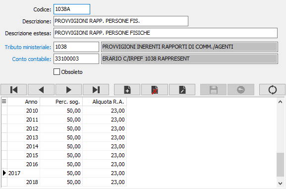

Codici tributo
La tabella è riservata alla creazione delle aliquote aziendali di ritenuta d’acconto per le varie tipologie di attività. Ciò è necessario perchè alcuni codici tributo prevedono, per lo stesso codice tributo, percentuali di assoggettamento ed aliquote diverse in funzione di tipologie diverse di attività.

CODICE: campo alfanumerico di 8 caratteri per definire il codice del tributo in esame. Sul campo sono attive le funzioni di vista sulla tabella stessa.
DESCRIZIONE: campo alfanumerico per inserire la descrizione del tributo.
DESCRIZIONE ESTESA: Ulteriore descrizione del tributo.
TRIBUTO MINISTERIALE: codice alfanumerico di 4 caratteri, presente nella tabella Codici tributo, cui è soggetta la prestazione in esame. Sul campo sono attive le funzioni di ricerca (F9).
CONTO CONTABILE: codice alfanumerico di 8 caratteri per inserire il codice del sottoconto patrimoniale di contabilità a cui devono essere imputati gli importi di ritenuta da versare all’Erario. Sul campo sono attive le funzioni di ricerca (F9).
ANNO FISCALE: campo numerico per indicare l’anno per cui sono validi i valori dei due campi successivi.
% ASSOGGETTAMENTO: campo numerico per definire la percentuale di assoggettamento ad IRPEF della prestazione in esame.
ALIQUOTA RITENUTA ACCONTO: campo numerico di per definire l’aliquota IRPEF della prestazione in esame.